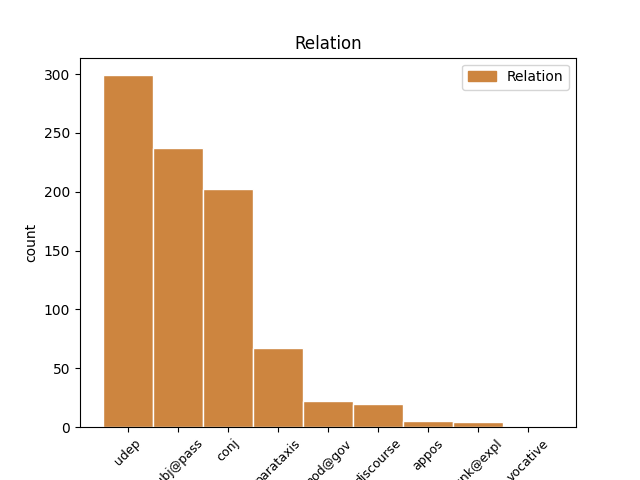

Distribution of features within this leaf

Agreement Rules sorted by frequency.
- When the dependent token is the subject(subj@pass) of the head token, and the head token is VERB and the dependent token is PRON.
1 Весь _ _ _ _ 0 _ _ _
2 лес _ _ _ _ 0 _ _ _
3 был _ _ _ _ 0 _ _ _
4 населен _ _ _ _ 0 _ _ _
5 голосами _ _ _ _ 0 _ _ _
6 прошлого _ _ _ _ 0 _ _ _
7 , _ _ _ _ 0 _ _ _
8 и _ _ _ _ 0 _ _ _
9 я _ _ _ _ 0 _ _ _
10 впервые _ _ _ _ 0 _ _ _
11 с _ _ _ _ 0 _ _ _
12 ошеломляющей _ _ _ _ 0 _ _ _
13 силой _ _ _ _ 0 _ _ _
14 ощутил _ _ _ _ 0 _ _ _
15 , _ _ _ _ 0 _ _ _
16 как _ _ _ _ 0 _ _ _
17 много _ _ _ _ 0 _ _ _
18 пробыл _ _ _ _ 0 _ _ _
19 на _ _ _ _ 0 _ _ _
20 этом _ _ _ _ 0 _ _ _
21 свете _ _ _ _ 0 _ _ _
22 и _ _ _ _ 0 _ _ _
23 что _ _ _ _ 0 _ _ _
24 прожитое _ _ _ _ 0 _ _ _
25 - _ _ _ _ 0 _ _ _
26 это _ _ _ _ 0 _ _ _
27 не _ _ _ _ 0 _ _ _
28 разбег _ _ _ _ 0 _ _ _
29 для _ _ _ _ 0 _ _ _
30 взлета _ _ _ _ 0 _ _ _
31 в _ _ _ _ 0 _ _ _
32 какую-то _ _ _ _ 0 _ _ _
33 будущую _ _ _ _ 0 _ _ _
34 , _ _ _ _ 0 _ _ _
35 настоящую _ _ _ _ 0 _ _ _
36 жизнь _ _ _ _ 0 _ _ _
37 , _ _ _ _ 0 _ _ _
38 что _ _ _ _ 0 _ _ _
39 это _ _ _ _ 0 _ _ _
40 уже _ _ _ _ 0 _ _ _
41 жизнь _ _ _ _ 0 _ _ _
42 , _ _ _ _ 0 _ _ _
43 в _ _ _ _ 0 _ _ _
44 которой _ _ _ _ 0 _ _ _
45 все все PRON _ Animacy=Inan|Case=Nom|Gender=Neut|Number=Sing 46 subj@pass _ _
46 связано связать VERB _ Aspect=Perf|Gender=Neut|Number=Sing|Tense=Past|Variant=Short|VerbForm=Part|Voice=Pass 0 _ _ _
47 : _ _ _ _ 0 _ _ _
48 далекое _ _ _ _ 0 _ _ _
49 прошлое _ _ _ _ 0 _ _ _
50 с _ _ _ _ 0 _ _ _
51 настоящим _ _ _ _ 0 _ _ _
52 , _ _ _ _ 0 _ _ _
53 а _ _ _ _ 0 _ _ _
54 если _ _ _ _ 0 _ _ _
55 мне _ _ _ _ 0 _ _ _
56 суждено _ _ _ _ 0 _ _ _
57 будущее _ _ _ _ 0 _ _ _
58 , _ _ _ _ 0 _ _ _
59 то _ _ _ _ 0 _ _ _
60 и _ _ _ _ 0 _ _ _
61 оно _ _ _ _ 0 _ _ _
62 окажется _ _ _ _ 0 _ _ _
63 нерасторжимо _ _ _ _ 0 _ _ _
64 связанным _ _ _ _ 0 _ _ _
65 с _ _ _ _ 0 _ _ _
66 пережитым _ _ _ _ 0 _ _ _
67 ; _ _ _ _ 0 _ _ _
1 Я _ _ _ _ 0 _ _ _
2 сорвал срыть VERB _ Aspect=Perf|Gender=Masc|Mood=Ind|Number=Sing|Tense=Past|VerbForm=Fin|Voice=Act 0 _ _ _
3 гриб _ _ _ _ 0 _ _ _
4 , _ _ _ _ 0 _ _ _
5 он _ _ _ _ 0 _ _ _
6 был быть AUX _ Aspect=Imp|Gender=Masc|Mood=Ind|Number=Sing|Tense=Past|VerbForm=Fin|Voice=Act 2 conj _ _
7 каменной _ _ _ _ 0 _ _ _
8 крепости _ _ _ _ 0 _ _ _
9 , _ _ _ _ 0 _ _ _
10 и _ _ _ _ 0 _ _ _
11 сунул _ _ _ _ 0 _ _ _
12 его _ _ _ _ 0 _ _ _
13 в _ _ _ _ 0 _ _ _
14 карман _ _ _ _ 0 _ _ _
15 , _ _ _ _ 0 _ _ _
16 уверенный _ _ _ _ 0 _ _ _
17 , _ _ _ _ 0 _ _ _
18 что _ _ _ _ 0 _ _ _
19 он _ _ _ _ 0 _ _ _
20 не _ _ _ _ 0 _ _ _
21 сломается _ _ _ _ 0 _ _ _
22 . _ _ _ _ 0 _ _ _
1 В _ _ _ _ 0 _ _ _
2 свое _ _ _ _ 0 _ _ _
3 время _ _ _ _ 0 _ _ _
4 В. _ _ _ _ 0 _ _ _
5 И. _ _ _ _ 0 _ _ _
6 Ленин _ _ _ _ 0 _ _ _
7 ядовито _ _ _ _ 0 _ _ _
8 высмеял _ _ _ _ 0 _ _ _
9 пустопорожние _ _ _ _ 0 _ _ _
10 словопрения _ _ _ _ 0 _ _ _
11 депутатов _ _ _ _ 0 _ _ _
12 III _ _ _ _ 0 _ _ _
13 Думы _ _ _ _ 0 _ _ _
14 : _ _ _ _ 0 _ _ _
15 " _ _ _ _ 0 _ _ _
16 Повесть _ _ _ _ 0 _ _ _
17 о _ _ _ _ 0 _ _ _
18 том _ _ _ _ 0 _ _ _
19 , _ _ _ _ 0 _ _ _
20 как _ _ _ _ 0 _ _ _
21 Иван _ _ _ _ 0 _ _ _
22 Иваныч _ _ _ _ 0 _ _ _
23 обвинял обвинять VERB _ Aspect=Imp|Gender=Masc|Mood=Ind|Number=Sing|Tense=Past|VerbForm=Fin|Voice=Act 0 _ _ _
24 в _ _ _ _ 0 _ _ _
25 демагогии _ _ _ _ 0 _ _ _
26 Ивана Иван PROPN _ Animacy=Anim|Case=Gen|Gender=Masc|Number=Sing 23 udep _ _
27 Никифоровича _ _ _ _ 0 _ _ _
28 , _ _ _ _ 0 _ _ _
29 а _ _ _ _ 0 _ _ _
30 Иван _ _ _ _ 0 _ _ _
31 Никифорыч _ _ _ _ 0 _ _ _
32 Ивана _ _ _ _ 0 _ _ _
33 Иваныча _ _ _ _ 0 _ _ _
34 . _ _ _ _ 0 _ _ _
1 Например _ _ _ _ 0 _ _ _
2 , _ _ _ _ 0 _ _ _
3 весть _ _ _ _ 0 _ _ _
4 о _ _ _ _ 0 _ _ _
5 том _ _ _ _ 0 _ _ _
6 , _ _ _ _ 0 _ _ _
7 что _ _ _ _ 0 _ _ _
8 Л. Л. PROPN _ Animacy=Anim|Case=Nom|Gender=Masc|Number=Sing 10 subj@pass _ _
9 Скрягин _ _ _ _ 0 _ _ _
10 назначен назначить VERB _ Aspect=Perf|Gender=Masc|Number=Sing|Tense=Past|Variant=Short|VerbForm=Part|Voice=Pass 0 _ _ _
11 министром _ _ _ _ 0 _ _ _
12 социального _ _ _ _ 0 _ _ _
13 обеспечения _ _ _ _ 0 _ _ _
14 , _ _ _ _ 0 _ _ _
15 вызвала _ _ _ _ 0 _ _ _
16 прямо-таки _ _ _ _ 0 _ _ _
17 бурю _ _ _ _ 0 _ _ _
18 негодования _ _ _ _ 0 _ _ _
19 в _ _ _ _ 0 _ _ _
20 коллективе _ _ _ _ 0 _ _ _
21 этого _ _ _ _ 0 _ _ _
22 ведомства _ _ _ _ 0 _ _ _
23 . _ _ _ _ 0 _ _ _
1 Побежденный победить VERB _ Aspect=Perf|Case=Nom|Gender=Masc|Number=Sing|Tense=Past|VerbForm=Part|Voice=Pass 0 _ _ _
2 им он PRON _ Case=Ins|Gender=Masc|Number=Sing|Person=3 1 udep _ _
3 на _ _ _ _ 0 _ _ _
4 моих _ _ _ _ 0 _ _ _
5 глазах _ _ _ _ 0 _ _ _
6 молодой _ _ _ _ 0 _ _ _
7 , _ _ _ _ 0 _ _ _
8 смуглоногий _ _ _ _ 0 _ _ _
9 , _ _ _ _ 0 _ _ _
10 красивый _ _ _ _ 0 _ _ _
11 Батаен _ _ _ _ 0 _ _ _
12 , _ _ _ _ 0 _ _ _
13 чья _ _ _ _ 0 _ _ _
14 звезда _ _ _ _ 0 _ _ _
15 только _ _ _ _ 0 _ _ _
16 тогда _ _ _ _ 0 _ _ _
17 всходила _ _ _ _ 0 _ _ _
18 , _ _ _ _ 0 _ _ _
19 уже _ _ _ _ 0 _ _ _
20 через _ _ _ _ 0 _ _ _
21 год _ _ _ _ 0 _ _ _
22 отбросил _ _ _ _ 0 _ _ _
23 Тенненбаума _ _ _ _ 0 _ _ _
24 на _ _ _ _ 0 _ _ _
25 второе _ _ _ _ 0 _ _ _
26 место _ _ _ _ 0 _ _ _
27 . _ _ _ _ 0 _ _ _
1 Увидев _ _ _ _ 0 _ _ _
2 меня _ _ _ _ 0 _ _ _
3 в _ _ _ _ 0 _ _ _
4 обновке _ _ _ _ 0 _ _ _
5 , _ _ _ _ 0 _ _ _
6 отец _ _ _ _ 0 _ _ _
7 чуть _ _ _ _ 0 _ _ _
8 не _ _ _ _ 0 _ _ _
9 заплакал заплакать VERB _ Aspect=Perf|Gender=Masc|Mood=Ind|Number=Sing|Tense=Past|VerbForm=Fin|Voice=Act 0 _ _ _
10 - _ _ _ _ 0 _ _ _
11 я _ _ _ _ 0 _ _ _
12 был быть AUX _ Aspect=Imp|Gender=Masc|Mood=Ind|Number=Sing|Tense=Past|VerbForm=Fin|Voice=Act 9 parataxis _ _
13 похож _ _ _ _ 0 _ _ _
14 на _ _ _ _ 0 _ _ _
15 какой-то _ _ _ _ 0 _ _ _
16 ядовитый _ _ _ _ 0 _ _ _
17 стручок _ _ _ _ 0 _ _ _
18 - _ _ _ _ 0 _ _ _
19 и _ _ _ _ 0 _ _ _
20 тут _ _ _ _ 0 _ _ _
21 же _ _ _ _ 0 _ _ _
22 отдал _ _ _ _ 0 _ _ _
23 мне _ _ _ _ 0 _ _ _
24 на _ _ _ _ 0 _ _ _
25 пальто _ _ _ _ 0 _ _ _
26 свой _ _ _ _ 0 _ _ _
27 единственный _ _ _ _ 0 _ _ _
28 выходной _ _ _ _ 0 _ _ _
29 пиджак _ _ _ _ 0 _ _ _
30 . _ _ _ _ 0 _ _ _
1 В _ _ _ _ 0 _ _ _
2 свое _ _ _ _ 0 _ _ _
3 время _ _ _ _ 0 _ _ _
4 В. _ _ _ _ 0 _ _ _
5 И. _ _ _ _ 0 _ _ _
6 Ленин _ _ _ _ 0 _ _ _
7 ядовито _ _ _ _ 0 _ _ _
8 высмеял _ _ _ _ 0 _ _ _
9 пустопорожние _ _ _ _ 0 _ _ _
10 словопрения _ _ _ _ 0 _ _ _
11 депутатов _ _ _ _ 0 _ _ _
12 III _ _ _ _ 0 _ _ _
13 Думы _ _ _ _ 0 _ _ _
14 : _ _ _ _ 0 _ _ _
15 " _ _ _ _ 0 _ _ _
16 Повесть _ _ _ _ 0 _ _ _
17 о _ _ _ _ 0 _ _ _
18 том _ _ _ _ 0 _ _ _
19 , _ _ _ _ 0 _ _ _
20 как _ _ _ _ 0 _ _ _
21 Иван _ _ _ _ 0 _ _ _
22 Иваныч _ _ _ _ 0 _ _ _
23 обвинял обвинять VERB _ Aspect=Imp|Gender=Masc|Mood=Ind|Number=Sing|Tense=Past|VerbForm=Fin|Voice=Act 0 _ _ _
24 в _ _ _ _ 0 _ _ _
25 демагогии _ _ _ _ 0 _ _ _
26 Ивана _ _ _ _ 0 _ _ _
27 Никифоровича _ _ _ _ 0 _ _ _
28 , _ _ _ _ 0 _ _ _
29 а _ _ _ _ 0 _ _ _
30 Иван Иван PROPN _ Animacy=Anim|Case=Nom|Gender=Masc|Number=Sing 23 conj _ _
31 Никифорыч _ _ _ _ 0 _ _ _
32 Ивана _ _ _ _ 0 _ _ _
33 Иваныча _ _ _ _ 0 _ _ _
34 . _ _ _ _ 0 _ _ _
1 Скорее _ _ _ _ 0 _ _ _
2 это _ _ _ _ 0 _ _ _
3 было быть VERB _ Aspect=Imp|Gender=Neut|Mood=Ind|Number=Sing|Tense=Past|VerbForm=Fin|Voice=Act 0 _ _ _
4 одно один NUM _ Case=Nom|Gender=Neut 3 mod@gov _ _
5 из _ _ _ _ 0 _ _ _
6 тех _ _ _ _ 0 _ _ _
7 обратных _ _ _ _ 0 _ _ _
8 чудес _ _ _ _ 0 _ _ _
9 , _ _ _ _ 0 _ _ _
10 чудес _ _ _ _ 0 _ _ _
11 зла _ _ _ _ 0 _ _ _
12 , _ _ _ _ 0 _ _ _
13 автор _ _ _ _ 0 _ _ _
14 которых _ _ _ _ 0 _ _ _
15 - _ _ _ _ 0 _ _ _
16 сам _ _ _ _ 0 _ _ _
17 дьявол _ _ _ _ 0 _ _ _
18 . _ _ _ _ 0 _ _ _
1 Но _ _ _ _ 0 _ _ _
2 зато _ _ _ _ 0 _ _ _
3 сколько _ _ _ _ 0 _ _ _
4 их _ _ _ _ 0 _ _ _
5 было _ _ _ _ 0 _ _ _
6 потом _ _ _ _ 0 _ _ _
7 , _ _ _ _ 0 _ _ _
8 сколько _ _ _ _ 0 _ _ _
9 верст _ _ _ _ 0 _ _ _
10 проделал проделать VERB _ Aspect=Perf|Gender=Masc|Mood=Ind|Number=Sing|Tense=Past|VerbForm=Fin|Voice=Act 0 _ _ _
11 я _ _ _ _ 0 _ _ _
12 по _ _ _ _ 0 _ _ _
13 следам _ _ _ _ 0 _ _ _
14 отца _ _ _ _ 0 _ _ _
15 : _ _ _ _ 0 _ _ _
16 далекий _ _ _ _ 0 _ _ _
17 Иркутск Иркутск PROPN _ Animacy=Inan|Case=Nom|Gender=Masc|Number=Sing 10 parataxis _ SpaceAfter=No
18 , _ _ _ _ 0 _ _ _
19 душный _ _ _ _ 0 _ _ _
20 , _ _ _ _ 0 _ _ _
21 пропыленный _ _ _ _ 0 _ _ _
22 Саратов _ _ _ _ 0 _ _ _
23 , _ _ _ _ 0 _ _ _
24 первое _ _ _ _ 0 _ _ _
25 чудо _ _ _ _ 0 _ _ _
26 Ленинграда _ _ _ _ 0 _ _ _
27 , _ _ _ _ 0 _ _ _
28 забытый _ _ _ _ 0 _ _ _
29 богом _ _ _ _ 0 _ _ _
30 Егорьевск _ _ _ _ 0 _ _ _
31 , _ _ _ _ 0 _ _ _
32 Кандалакша _ _ _ _ 0 _ _ _
33 среди _ _ _ _ 0 _ _ _
34 поросших _ _ _ _ 0 _ _ _
35 карликовыми _ _ _ _ 0 _ _ _
36 соснами _ _ _ _ 0 _ _ _
37 сопок _ _ _ _ 0 _ _ _
38 и _ _ _ _ 0 _ _ _
39 похожих _ _ _ _ 0 _ _ _
40 на _ _ _ _ 0 _ _ _
41 осколки _ _ _ _ 0 _ _ _
42 зеркала _ _ _ _ 0 _ _ _
43 озер _ _ _ _ 0 _ _ _
44 , _ _ _ _ 0 _ _ _
45 край _ _ _ _ 0 _ _ _
46 , _ _ _ _ 0 _ _ _
47 разлинованный _ _ _ _ 0 _ _ _
48 , _ _ _ _ 0 _ _ _
49 как _ _ _ _ 0 _ _ _
50 ученическая _ _ _ _ 0 _ _ _
51 тетрадь _ _ _ _ 0 _ _ _
52 , _ _ _ _ 0 _ _ _
53 рядами _ _ _ _ 0 _ _ _
54 колючей _ _ _ _ 0 _ _ _
55 проволоки _ _ _ _ 0 _ _ _
56 , _ _ _ _ 0 _ _ _
57 страшная _ _ _ _ 0 _ _ _
58 Рохма _ _ _ _ 0 _ _ _
59 … _ _ _ _ 0 _ _ _
1 По _ _ _ _ 0 _ _ _
2 данным _ _ _ _ 0 _ _ _
3 того _ _ _ _ 0 _ _ _
4 же _ _ _ _ 0 _ _ _
5 источника _ _ _ _ 0 _ _ _
6 , _ _ _ _ 0 _ _ _
7 в _ _ _ _ 0 _ _ _
8 станице _ _ _ _ 0 _ _ _
9 Мекенская _ _ _ _ 0 _ _ _
10 Наурского _ _ _ _ 0 _ _ _
11 района _ _ _ _ 0 _ _ _
12 задержан задержать VERB _ Aspect=Perf|Gender=Masc|Number=Sing|Tense=Past|Variant=Short|VerbForm=Part|Voice=Pass 0 _ _ _
13 один один NUM _ Case=Nom|Gender=Masc 12 subj@pass _ _
14 из _ _ _ _ 0 _ _ _
15 местных _ _ _ _ 0 _ _ _
16 жителей _ _ _ _ 0 _ _ _
17 . _ _ _ _ 0 _ _ _
1 Тем то PRON _ Animacy=Inan|Case=Ins|Gender=Neut|Number=Sing 5 discourse _ _
2 не _ _ _ _ 0 _ _ _
3 менее _ _ _ _ 0 _ _ _
4 неизменным _ _ _ _ 0 _ _ _
5 осталось остаться VERB _ Aspect=Perf|Gender=Neut|Mood=Ind|Number=Sing|Tense=Past|VerbForm=Fin|Voice=Mid 0 _ _ _
6 мое _ _ _ _ 0 _ _ _
7 желание _ _ _ _ 0 _ _ _
8 добиваться _ _ _ _ 0 _ _ _
9 поставленных _ _ _ _ 0 _ _ _
10 целей _ _ _ _ 0 _ _ _
11 . _ _ _ _ 0 _ _ _
1 Передача _ _ _ _ 0 _ _ _
2 первых _ _ _ _ 0 _ _ _
3 67 _ _ _ _ 0 _ _ _
4 томов _ _ _ _ 0 _ _ _
5 из _ _ _ _ 0 _ _ _
6 183 _ _ _ _ 0 _ _ _
7 - _ _ _ _ 0 _ _ _
8 томного _ _ _ _ 0 _ _ _
9 дела _ _ _ _ 0 _ _ _
10 состоялась _ _ _ _ 0 _ _ _
11 в _ _ _ _ 0 _ _ _
12 Москве _ _ _ _ 0 _ _ _
13 в _ _ _ _ 0 _ _ _
14 мае _ _ _ _ 0 _ _ _
15 2010 _ _ _ _ 0 _ _ _
16 года _ _ _ _ 0 _ _ _
17 в _ _ _ _ 0 _ _ _
18 ходе _ _ _ _ 0 _ _ _
19 визита _ _ _ _ 0 _ _ _
20 исполняющего исполнять VERB _ Aspect=Imp|Case=Gen|Gender=Masc|Number=Sing|Tense=Pres|VerbForm=Part|Voice=Act 0 _ _ _
21 обязанности _ _ _ _ 0 _ _ _
22 президента _ _ _ _ 0 _ _ _
23 Польши _ _ _ _ 0 _ _ _
24 Коморовского Коморовский PROPN _ Animacy=Anim|Case=Gen|Gender=Masc|Number=Sing 20 appos _ SpaceAfter=No
25 . _ _ _ _ 0 _ _ _
1 Это это PRON _ Animacy=Inan|Case=Nom|Gender=Neut|Number=Sing 3 unk@expl _ _
2 ему _ _ _ _ 0 _ _ _
3 повезло везти VERB _ Aspect=Perf|Gender=Neut|Mood=Ind|Number=Sing|Tense=Past|VerbForm=Fin|Voice=Act 0 _ _ _
4 . _ _ _ _ 0 _ _ _
1 Если _ _ _ _ 0 _ _ _
2 кому _ _ _ _ 0 _ _ _
3 и _ _ _ _ 0 _ _ _
4 доставалось доставаться VERB _ Aspect=Imp|Gender=Neut|Mood=Ind|Number=Sing|Tense=Past|VerbForm=Fin|Voice=Mid 0 _ _ _
5 от _ _ _ _ 0 _ _ _
6 прессы _ _ _ _ 0 _ _ _
7 в _ _ _ _ 0 _ _ _
8 последнее _ _ _ _ 0 _ _ _
9 время _ _ _ _ 0 _ _ _
10 , _ _ _ _ 0 _ _ _
11 так _ _ _ _ 0 _ _ _
12 это это PRON _ Animacy=Inan|Case=Nom|Gender=Neut|Number=Sing 4 appos _ _
13 главе _ _ _ _ 0 _ _ _
14 Рособрнадзора _ _ _ _ 0 _ _ _
15 Виктору _ _ _ _ 0 _ _ _
16 Болотову _ _ _ _ 0 _ _ _
17 . _ _ _ _ 0 _ _ _
1 Между _ _ _ _ 0 _ _ _
2 первыми _ _ _ _ 0 _ _ _
3 двумя _ _ _ _ 0 _ _ _
4 прошло пройти VERB _ Aspect=Perf|Gender=Neut|Mood=Ind|Number=Sing|Tense=Past|VerbForm=Fin|Voice=Act 0 _ _ _
5 160 _ _ _ _ 0 _ _ _
6 секунд _ _ _ _ 0 _ _ _
7 , _ _ _ _ 0 _ _ _
8 то то PRON _ Animacy=Inan|Case=Nom|Gender=Neut|Number=Sing 4 parataxis _ _
9 есть _ _ _ _ 0 _ _ _
10 за _ _ _ _ 0 _ _ _
11 160 _ _ _ _ 0 _ _ _
12 секунд _ _ _ _ 0 _ _ _
13 они _ _ _ _ 0 _ _ _
14 никуда _ _ _ _ 0 _ _ _
15 не _ _ _ _ 0 _ _ _
16 сдвинулись _ _ _ _ 0 _ _ _
17 . _ _ _ _ 0 _ _ _
1 И _ _ _ _ 0 _ _ _
2 , _ _ _ _ 0 _ _ _
3 как _ _ _ _ 0 _ _ _
4 ни _ _ _ _ 0 _ _ _
5 умен _ _ _ _ 0 _ _ _
6 был быть AUX _ Aspect=Imp|Gender=Masc|Mood=Ind|Number=Sing|Tense=Past|VerbForm=Fin|Voice=Act 11 udep _ _
7 прокурор _ _ _ _ 0 _ _ _
8 , _ _ _ _ 0 _ _ _
9 он _ _ _ _ 0 _ _ _
10 не _ _ _ _ 0 _ _ _
11 предугадал предугадать VERB _ Aspect=Perf|Gender=Masc|Mood=Ind|Number=Sing|Tense=Past|VerbForm=Fin|Voice=Act 0 _ _ _
12 той _ _ _ _ 0 _ _ _
13 новой _ _ _ _ 0 _ _ _
14 вспышки _ _ _ _ 0 _ _ _
15 ненависти _ _ _ _ 0 _ _ _
16 к _ _ _ _ 0 _ _ _
17 евреям _ _ _ _ 0 _ _ _
18 , _ _ _ _ 0 _ _ _
19 которую _ _ _ _ 0 _ _ _
20 породил _ _ _ _ 0 _ _ _
21 в _ _ _ _ 0 _ _ _
22 Германии _ _ _ _ 0 _ _ _
23 60-х _ _ _ _ 0 _ _ _
24 процесс _ _ _ _ 0 _ _ _
25 по _ _ _ _ 0 _ _ _
26 Аушвицу _ _ _ _ 0 _ _ _
27 . _ _ _ _ 0 _ _ _
1 " _ _ _ _ 0 _ _ _
2 Господи Господь PROPN _ Animacy=Anim|Case=Voc|Gender=Masc|Number=Sing 12 vocative _ SpaceAfter=No
3 , _ _ _ _ 0 _ _ _
4 - _ _ _ _ 0 _ _ _
5 говорю _ _ _ _ 0 _ _ _
6 , _ _ _ _ 0 _ _ _
7 - _ _ _ _ 0 _ _ _
8 теперь _ _ _ _ 0 _ _ _
9 еще _ _ _ _ 0 _ _ _
10 и _ _ _ _ 0 _ _ _
11 голову _ _ _ _ 0 _ _ _
12 разбил разбить VERB _ Aspect=Perf|Gender=Masc|Mood=Ind|Number=Sing|Tense=Past|VerbForm=Fin|Voice=Act 0 _ _ _
13 " _ _ _ _ 0 _ _ _
14 . _ _ _ _ 0 _ _ _
Disagree Examples:
1 - _ _ _ _ 0 _ _ _
2 Знаете _ _ _ _ 0 _ _ _
3 , _ _ _ _ 0 _ _ _
4 все _ _ _ _ 0 _ _ _
5 устроилось устроиться VERB _ Aspect=Perf|Gender=Neut|Mood=Ind|Number=Sing|Tense=Past|VerbForm=Fin|Voice=Mid 0 _ _ _
6 , _ _ _ _ 0 _ _ _
7 Семен Семен PROPN _ Animacy=Anim|Case=Nom|Gender=Masc|Number=Sing 5 parataxis _ _
8 Еремеевич _ _ _ _ 0 _ _ _
9 ! _ _ _ _ 0 _ _ _
10 - _ _ _ _ 0 _ _ _
11 начала _ _ _ _ 0 _ _ _
12 она _ _ _ _ 0 _ _ _
13 , _ _ _ _ 0 _ _ _
14 даже _ _ _ _ 0 _ _ _
15 не _ _ _ _ 0 _ _ _
16 поздоровавшись _ _ _ _ 0 _ _ _
17 . _ _ _ _ 0 _ _ _
1 " _ _ _ _ 0 _ _ _
2 Врет _ _ _ _ 0 _ _ _
3 , _ _ _ _ 0 _ _ _
4 - _ _ _ _ 0 _ _ _
5 подумал подумать VERB _ Aspect=Perf|Gender=Masc|Mood=Ind|Number=Sing|Tense=Past|VerbForm=Fin|Voice=Act 0 _ _ _
6 Ушаков _ _ _ _ 0 _ _ _
7 , _ _ _ _ 0 _ _ _
8 и _ _ _ _ 0 _ _ _
9 ему _ _ _ _ 0 _ _ _
10 приятно _ _ _ _ 0 _ _ _
11 было быть AUX _ Aspect=Imp|Gender=Neut|Mood=Ind|Number=Sing|Tense=Past|VerbForm=Fin|Voice=Act 5 conj _ _
12 сейчас _ _ _ _ 0 _ _ _
13 смотреть _ _ _ _ 0 _ _ _
14 на _ _ _ _ 0 _ _ _
15 этого _ _ _ _ 0 _ _ _
16 здорового _ _ _ _ 0 _ _ _
17 и _ _ _ _ 0 _ _ _
18 , _ _ _ _ 0 _ _ _
19 видно _ _ _ _ 0 _ _ _
20 , _ _ _ _ 0 _ _ _
21 боевого _ _ _ _ 0 _ _ _
22 парня _ _ _ _ 0 _ _ _
23 . _ _ _ _ 0 _ _ _
1 Или _ _ _ _ 0 _ _ _
2 это это PRON _ Animacy=Inan|Case=Nom|Gender=Neut|Number=Sing 4 unk@expl _ _
3 снег _ _ _ _ 0 _ _ _
4 таял таять VERB _ Aspect=Imp|Gender=Masc|Mood=Ind|Number=Sing|Tense=Past|VerbForm=Fin|Voice=Act 0 _ _ _
5 на _ _ _ _ 0 _ _ _
6 груди _ _ _ _ 0 _ _ _
7 ? _ _ _ _ 0 _ _ _
1 Хорошо _ _ _ _ 0 _ _ _
2 , _ _ _ _ 0 _ _ _
3 что _ _ _ _ 0 _ _ _
4 он _ _ _ _ 0 _ _ _
5 не _ _ _ _ 0 _ _ _
6 видел видеть VERB _ Aspect=Imp|Gender=Masc|Mood=Ind|Number=Sing|Tense=Past|VerbForm=Fin|Voice=Act 0 _ _ _
7 этого это PRON _ Animacy=Inan|Case=Gen|Gender=Neut|Number=Sing 6 udep _ SpaceAfter=No
8 ! _ _ _ _ 0 _ _ _
1 Одна _ _ _ _ 0 _ _ _
2 пушка _ _ _ _ 0 _ _ _
3 , _ _ _ _ 0 _ _ _
4 брошенная _ _ _ _ 0 _ _ _
5 всеми _ _ _ _ 0 _ _ _
6 , _ _ _ _ 0 _ _ _
7 завалилась завалиться VERB _ Aspect=Perf|Gender=Fem|Mood=Ind|Number=Sing|Tense=Past|VerbForm=Fin|Voice=Mid 0 _ _ _
8 набок _ _ _ _ 0 _ _ _
9 : _ _ _ _ 0 _ _ _
10 левое _ _ _ _ 0 _ _ _
11 колесо _ _ _ _ 0 _ _ _
12 было быть AUX _ Aspect=Imp|Gender=Neut|Mood=Ind|Number=Sing|Tense=Past|VerbForm=Fin|Voice=Act 7 parataxis _ _
13 отбито _ _ _ _ 0 _ _ _
14 . _ _ _ _ 0 _ _ _